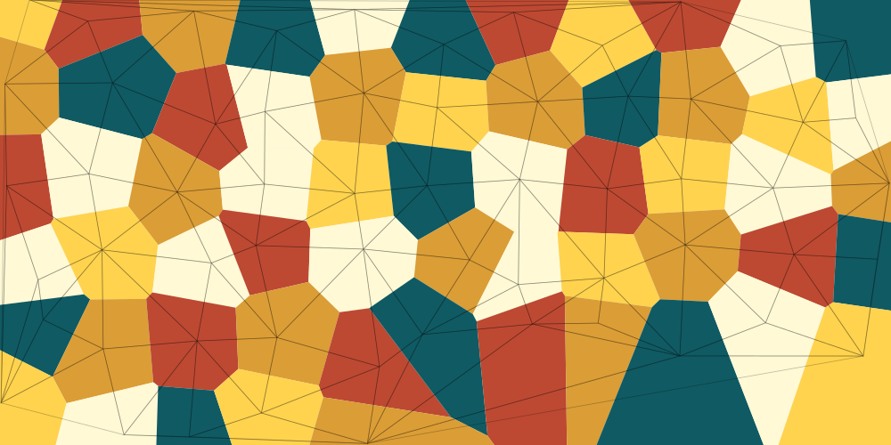
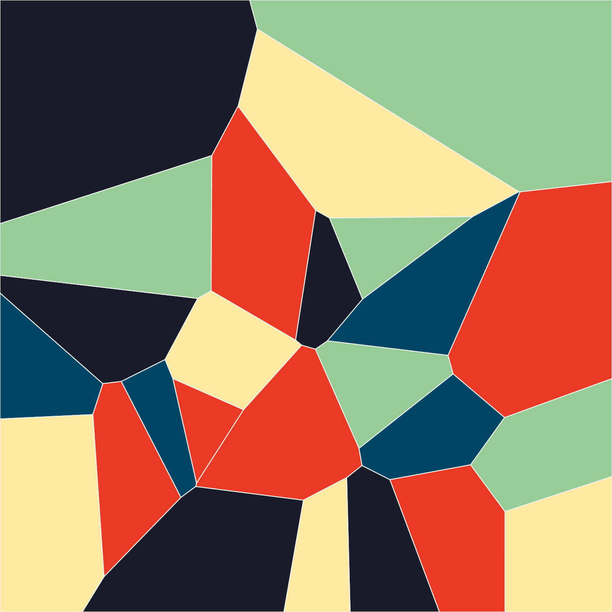
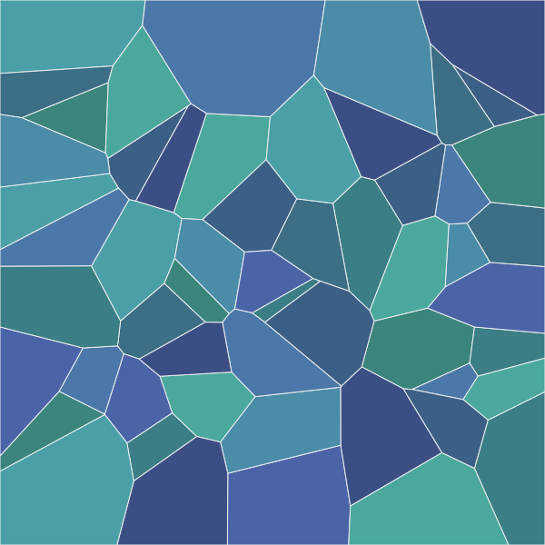

Voronoi Art Generator
Years ago I wrote about trying to build a color palette generator and mostly failing. This is a little bit of a spiritual sequel to that, in the sense that it involves colors, and I actually finished it.
I've been curious about Voronoi diagrams for a while. The basic idea is simpler than I used to think: scatter a bunch of points across a plane, and for every location in that plane, ask which point is closest. The answer carves the plane into regions, one per point, with no gaps or overlaps. Those regions are the Voronoi cells. What I find interesting is that the result looks organic even when the points are placed randomly, because every boundary is always the exact midpoint between two neighboring points. Nudge one point and its cell shifts; the whole diagram adjusts. That behavior shows up all over nature (giraffe patterns, dried mud cracks, leaf cell structures), and I wanted to see it in action.
So I built a small Python tool to generate Voronoi art as SVG files. You give it a canvas size, a number of seed points, a color palette, and a handful of other options, and it spits out a diagram with each cell filled in using a graph-coloring algorithm (so no two neighboring cells share a color). You can also toggle on the Delaunay triangulation as an overlay, which is the mathematical buddy of the Voronoi diagram, and makes the underlying geometry visible in a way I find satisfying.
A few things I'm pleased with:
- It ships with 140 named color palettes, so random runs are rarely ugly
- Grid layout option gives a more structured, tiled feel versus the organic randomness of the default random placement
- Every run writes a JSON file next to the output with all the parameters used, so you can reproduce any result exactly
- You can also pass a hex color and let it derive a palette from that using color harmony rules (analogous, complementary, triadic, monochrome)
The code is on GitHub if you want to take a look or run it yourself. It's a uv-based Python project, so setup should be straightforward, if you're familiar with Python.
A few samples to give you an idea of the range:



This started as me trying to understand a concept, and turned into something I'm not totally embarrassed to share. Spinning it up with a random seed and seeing what comes out is quick and cool.
- Prior: G2 20250612
- Next: Custom MLB Video Title Cards